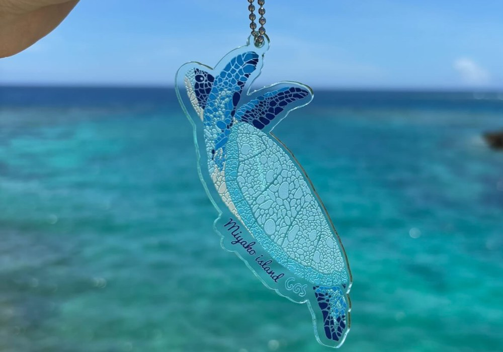

JUN
24
WED / 水
This Week今週開催
Masa Live at Ryukyu no Kaze琉球の風屋台村 Masaライブ
19:30 at Shigira Resort Ryukyu no Kaze Yataimura.
19:30より、シギラリゾート「琉球の風屋台村」にて開催。
View Masa's featureMasaの特集を見るMIYAKOJIMA • OKINAWA
Updated June 20262026年6月更新
A curated bilingual guide to Miyakojima.
英語対応のお店やスポットを紹介する 宮古島のバイリンガルガイド。
Officially Registered正式登録済み
My Miyakojima is an officially registered local platform for curated bilingual features and partnerships. My Miyakojimaは、宮古島の魅力を伝える正式登録済みのバイリンガルメディアです。
View Details事業者情報This Week on My Miyakojima今週のマイ宮古島

New Shop Feature新着ショップ特集 GGSジージーエスHandmade island-inspired art goods now featured in the Shops guide.
宮古島の色彩から生まれるハンドメイド作品を新着掲載。
 New Food Feature新着フード特集
Captain Marianキャプテンメリアン
New Food Feature新着フード特集
Captain Marianキャプテンメリアン
A famous steakhouse where English is spoken by staff, now featured in the food guide.
英語対応スタッフもいる有名ステーキハウスを新着掲載。
 Opening Soonまもなくオープン
TOPPURI Villa GlampingTOPPURI ヴィラグランピング
Opening Soonまもなくオープン
TOPPURI Villa GlampingTOPPURI ヴィラグランピング
A July opening story is now previewing on My Miyakojima.
7月オープン予定のヴィラグランピング特集を公開中。
This Week & Coming Up今週とこれからの宮古島
Miyakojima Events Only 宮古島内のイベントのみ Updated June 24 / 6月24日更新
19:30 at Shigira Resort Ryukyu no Kaze Yataimura.
19:30より、シギラリゾート「琉球の風屋台村」にて開催。
View Masa's featureMasaの特集を見るA reflective afternoon about natural dyeing, island water, and what Miyakojima residents can do for the island.
草木染め、島の水、そして宮古島のために今できることを考える共有の時間。
14:00-16:00 at Shimapimai. ¥1,500 with one drink.
14:00-16:00、シマピマイにて開催。ワンドリンク付き1,500円。
View Mica's featureMicaさんの特集を見るA gentle fair for heart, body, and senses, with a free Reiki circle mini program from 10:00.
心・身体・感覚を満たす癒しのフェア。10:00から無料参加のレイキサークルも開催。
10:00-17:00 at Hair Salon Sanin, near Moja no Pan-ya 2F.
10:00-17:00、Hair Salon Sanin（モジャのパン屋さん2F）にて開催。
View Mica's featureMicaさんの特集を見るA special 2026 performance at JTA Dome Miyakojima.
JTAドーム宮古島で開催される2026年の特別公演。
Official event details公式イベント情報Traditional sabani racing at Turiba Sunset Beach. Teams gather from 12:00.
トゥリバーサンセットビーチで行われる伝統サバニレース。12:00集合。
Official event details公式イベント情報Event details may change. Please confirm with the organizer before visiting. 開催内容は変更になる場合があります。お出かけ前に主催者の最新情報をご確認ください。
New Food Feature 新着フード特集
New Client Feature新規掲載A beloved Miyakojima steakhouse with American and Japanese roots, English-friendly staff, and a warm island feeling that makes dinner easy for travelers.
アメリカと日本、両方のルーツを持つオーナーが営む宮古島の人気ステーキハウス。英語対応のスタッフもいるため、旅行中の方にも予約しやすい一軒です。
View the feature 詳しく見るThe Island Edit宮古島エディット
A clear first step into island basics, newest stories, selected places, and creative features.
島の基本情報、新しい特集、おすすめスポット、クリエイティブ特集への入口。
 Start Hereはじめに
Start Hereはじめに
Beaches, bridges, seasons, transport, and small local tips for first-time visitors.
ビーチ、橋、季節、移動、初めて訪れる方に役立つ小さなヒント。
June Creative Spotlight6月のクリエイティブ特集A special musician shaped by Miyakojima, using his voice and visibility to give back to the island community.
宮古島に影響を受けた音楽と、島へ還元する姿勢が魅力のミュージシャン。
Selected PlacesおすすめスポットFood, stays, transport, wellness, and lifestyle picks chosen for the guide.
食事、宿泊、移動、ウェルネス、ライフスタイルまで、いつでも訪れたい場所。
Creative Archive特集アーカイブMonthly creative spotlights gathered in one place.
宮古島にゆかりのある人やストーリーをまとめた月ごとの特集。
NEW WELLNESS FEATURE 新着ウェルネス特集

PRIVATE SALON · HAWAIIAN LOMI LOMI
New Client Feature新規掲載A quiet sea-side relaxation salon in Miyakojima, offering private Hawaiian lomi lomi sessions by therapist Nanami Sato.
宮古島の海を感じる静かな貸切サロンで、セラピスト佐藤七海さんによるハワイアンロミロミを受けられる新しいウェルネス特集です。


BROWSE THE GUIDE ガイドを巡る
CONTRIBUTE TO MIYAKOJIMA 島にやさしく関わる

ENJOY • RESPECT • GIVE BACK
New Guide新しいガイドA gentle guide for visitors who want to enjoy the island while respecting local life, joining community efforts, and caring for Miyakojima's beaches and rhythm.
旅を楽しみながら、島の暮らしや自然を大切にしたい方へ。 ビーチクリーン、地域活動、思いやりのある過ごし方への入口です。
A curated bilingual lifestyle space featuring selected creatives, businesses, and stories rooted in Miyakojima’s culture.
宮古島の文化に根ざした、 厳選されたクリエイターやお店、ストーリーを紹介する バイリンガルのキュレーション型ライフスタイル空間です。
My Miyakojima is not just a website — it is a long-term discovery platform designed to help your business be found through Google search by people already interested in Miyakojima.
My Miyakojima は単なるウェブサイトではなく、 宮古島に興味を持つ人にGoogle検索を通して見つけてもらうための 長期的な発信プラットフォームです。
Your business becomes searchable on Google — not just visible on Instagram. This means people actively searching “Miyakojima restaurants”, “salon”, “things to do” can discover your business naturally.
Instagramだけでなく、Google検索から直接見つけてもらえます。 「宮古島 レストラン」「サロン」「観光」などの検索に対応。
Instagram posts disappear within hours. Your feature on My Miyakojima stays online and continues bringing visitors over time.
SNS投稿と違い、掲載ページは残り続け、 長期間にわたってアクセスが期待できます。
Your business is introduced in both English and Japanese, allowing you to reach international travelers and local customers at the same time.
英語と日本語で紹介することで、 観光客と地元客の両方にアプローチできます。
This is not a crowded listing site. Only selected places are featured, allowing your business to stand out clearly.
一覧サイトではなく厳選掲載のため、 他に埋もれずしっかり目立つことができます。
Pages are structured to guide users toward real action — visiting your store, making a reservation, or contacting you.
閲覧だけでなく、来店・予約・問い合わせにつながる設計になっています。
Content is structured with keywords, internal linking, and page flow to improve your visibility on Google over time.
キーワード設計や内部リンクにより、 検索結果で見つかりやすくなる構成にしています。
As the platform grows, early featured businesses gain stronger visibility and authority. Joining early gives you a long-term advantage.
初期掲載により、サイト成長とともに より強い露出効果が期待できます。
Perfect for restaurants, salons, guesthouses, rentals, and experiences that want to attract customers beyond Instagram.
飲食店、サロン、宿泊施設、レンタカー、体験など、 Instagram以外で集客したい方に最適です。
Your business can be found by people already planning their trip to Miyakojima. We target search intent — not random scrolling — meaning higher quality visitors.
宮古島に来る予定の人に向けて、 「探している人」に届く導線を作ります。
Your business is presented as part of Miyakojima’s lifestyle and culture — creating trust, story, and long-term brand value beyond simple advertising.
単なる宣伝ではなく、 宮古島のストーリーの一部として紹介することで信頼感を高めます。
Grow your presence in Miyakojima.
宮古島での集客を、次のレベルへ。
Be discovered by travelers already searching for Miyakojima.
宮古島に興味を持つ旅行者に、あなたのサービスを届けます。
6月の新しい内容
More Lodging Recos
宿泊施設の追加
Lifestyle Boutiques
ライフスタイルショップ
More Food & Local Spots
飲食店・ローカルスポット
Creative Profiles
クリエイター特集（6件）
And More
その他いろいろ